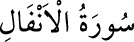

8- el-ENFÂL SÛRESİ
Enfâl sûresi, 75 âyettir. 30 ilâ 36. âyetler Mekke’de, diğerleri Medine’de inmiştir.
Enfâl, ziyade manasına gelen “nefl” kelimesinin çoğuludur. İslâm dinini
savunmak için yapılan savaşlarda elde edilen sevaba ek olarak alınan ganimet
malına da “nefl” denilmiştir.
Sûrenin birinci âyetinde savaştan elde edilen ganimetlerin Allah ve Rasûlüne ait
olduğu ifade edildiği için sûreye bu ad verilmiştir.